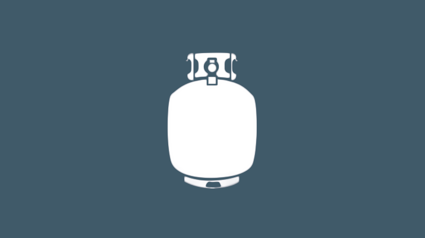

Propane and Fuel
Service and Supply offers not only liquid propane for your home and farm, but a large variety of refined fuels as well. At our Bellflower location, we provide serve-yourself gas pumps so that you may fill up on whatever fuel you need, when you need it. Regular E-10, dyed diesel, and road diesel are all available by delivery with a 200 gal minimum purchase.
Contact Us Back to top